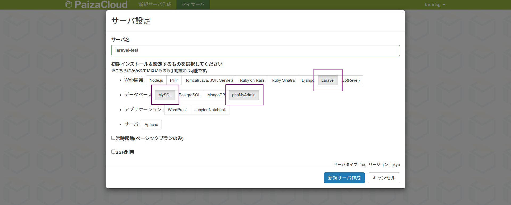
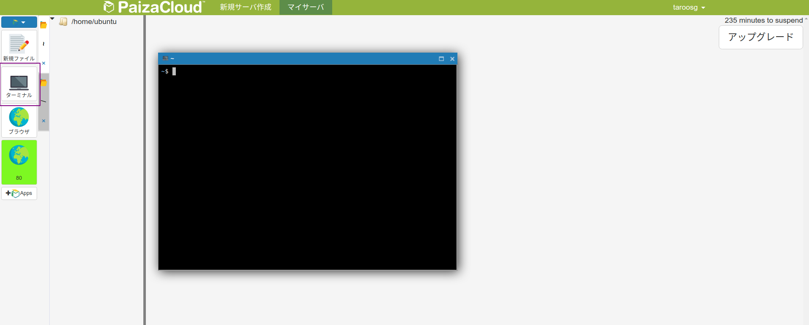
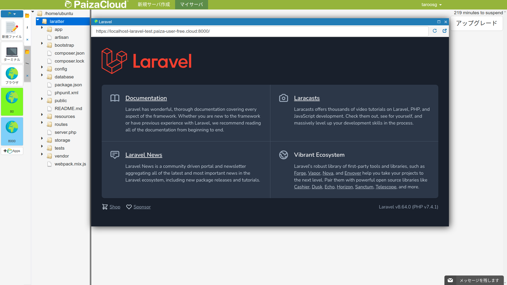
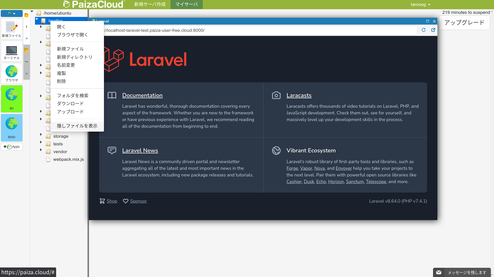
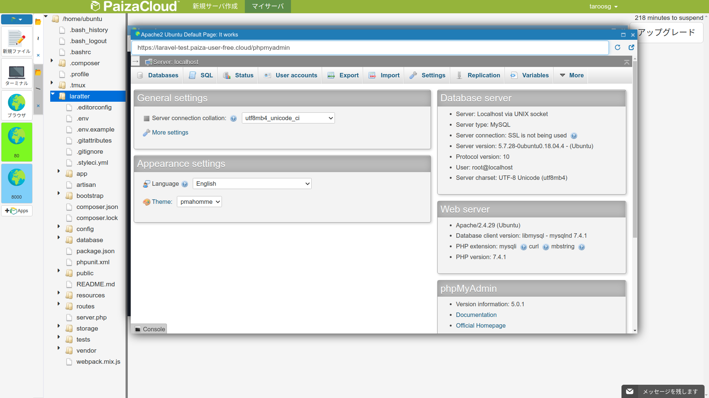
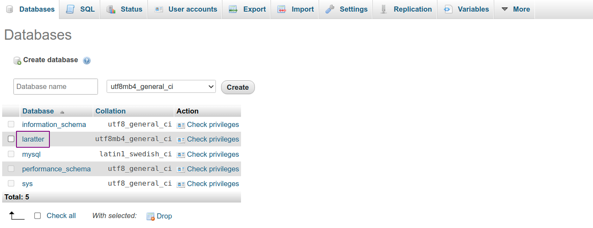

【Paiza Cloud 編】環境構築
一連の講義では，PHP のフレームワークである Laravel を用いて twitter 風の SNS アプリケーション「Laratter」を実装しながら，Web アプリケーションにおける基本的な処理をマスターする．
Paiza Cloud 上に Laravel 環境を準備
下記の URL にアクセスする．
ログインする．アカウントなければ適当に作成する．
ログインしたら「新規サーバ作成」をクリック．
- 名前は適当につける．
- Laravel，MySQL，phpmyadmin を選択する．
- サーバ作成ボタンクリックしてサーバの準備は完了．

Git のバージョンアップ
バージョンが古いので最新にしておく．
左側のターミナルをクリックしてターミナルを起動する．

下記の手順でコマンドを実行し，Git のバージョンを最新にする．
# Git リポジトリの追加
$ sudo add-apt-repository ppa:git-core/ppa
# 実行結果（中略）
The most current stable version of Git for Ubuntu.
...
W: Some index files failed to download. They have been ignored, or old ones used instead.
# パッケージのアップデート
$ sudo apt update
# 実行結果（中略）
Hit:1 http://ap-northeast-1.ec2.archive.ubuntu.com/ubuntu bionic InRelease
Hit:2 http://ap-northeast-1.ec2.archive.ubuntu.com/ubuntu bionic-updates InRelease
...
W: Some index files failed to download. They have been ignored, or old ones used instead.
# Git のインストール
$ sudo apt install git
# 実行結果（中略）
Reading package lists... Done
Building dependency tree
Reading state information... Done
...
Setting up git (1:2.33.1-0ppa1~ubuntu18.04.1) ...
Processing triggers for man-db (2.8.3-2ubuntu0.1) ...
# バージョン確認
$ git --version
# 実行結果
git version 2.33.1
Laravel プロジェクトの作成
引き続きターミナルで操作を行う．
下記コマンドを実行して Laravel のプロジェクトを作成する．
$ composer create-project laravel/laravel laratter --prefer-dist
完了したら下記コマンドを実行する．
$ cd laratter
$ php artisan serve
# 実行結果
Starting Laravel development server: http://127.0.0.1:8000
左側の「8000」をクリックして Laravel のアプリケーションを立ち上げる．
下記の画面が表示されれば OK！

サーバを終了するときは「ctrl + c」を入力する．
隠しファイルの表示
適当なフォルダ上で右クリックし，「隠しファイルを表示」をクリックする．

phpmyadmin
左側の「80」をクリックし，アドレスバーに /phpmyadmin を追加して Enter．
下記画面が表示されれば OK！

DB の作成
phpmyadmin 画面からデータベースを作成する．
Laravel ではテーブル作成は「マイグレーション」という仕組みを使用する（後述）ので，DB のみ準備しておけば OK．
phpmyadmin 画面の SQL タブをクリックし，下記の SQL を実行する．
CREATE DATABASE laratter;
Databases タブをクリックし，laratter データベースが作成されていれば OK！

Laravel から DB に接続するための設定
続いて，Laravel から MySQL にアクセスするための設定を行う．
エディタから.envファイルを開く．.envファイルはlaratterディレクトリの直下に配置されている．
10 行目から 15 行目を以下のように編集する．
DB_CONNECTION=mysql
DB_HOST=127.0.0.1
DB_PORT=3306
DB_DATABASE=laratter
DB_USERNAME=root
DB_PASSWORD=
それぞれ下記の意味となっている．デプロイする場合などはサービス提供者側からそれぞれ情報が提供されるため，必要に応じて編集する．
| 項目 | 意味 |
|---|---|
| DB_CONNECTION | DB の種類 |
| DB_HOST | DB のホスト名 |
| DB_PORT | DB のポート |
| DB_DATABASE | DB 名 |
| DB_USERNAME | DB にログインするときのユーザ名 |
| DB_PASSWORD | DB にログインするときのパスワード |
もし.envファイルを更新する場合はキャッシュをクリアする．
設定ファイルはサーバ起動時にキャッシュに保存されるため，変更した場合は「キャッシュをクリアする」「コンテナを立ち上げ直す」のどちらかが必要になる．
キャッシュクリアのコマンドを実行する場合は Laravel の仮想コンテナにログインした状態で行うこと．
$ php artisan config:cache
実行結果
Configuration cache cleared!
Configuration cached successfully!
HTTPS 設定の追加
Paiza Cloud 上では常に https で通信が行われる．そのため，Laravel 側でも同様の設定をしておかないとうまく動かない．
app/Providers/AppServiceProvider.php を以下のように編集する．
<?php
namespace App\Providers;
use Illuminate\Support\ServiceProvider;
// 🔽 1行追加 🔽
use Illuminate\Routing\UrlGenerator;
class AppServiceProvider extends ServiceProvider
{
/**
* Register any application services.
*
* @return void
*/
public function register()
{
//
}
/**
* Bootstrap any application services.
*
* @return void
*/
// 🔽 編集 🔽
public function boot(UrlGenerator $url)
{
$url->forceScheme('https');
}
}